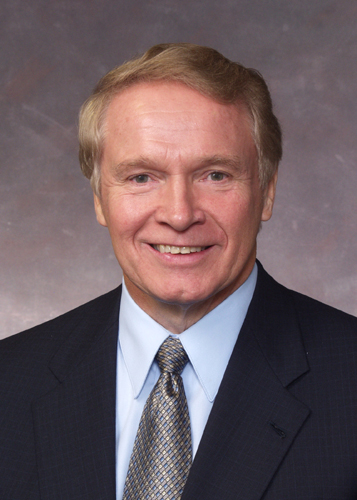

� RENDEZ-VOUS AVEC LA
GAGNE �
La biographie officielle de Bob
Serial
Editions Serial Book
� Si j'ai choisi de raconter ma vie apr�s plus de 50 ans de
business, c'est parce que je suis intimement persuad� qu'en chacun de nous
sommeille un entrepreneur qui ne demande qu'� se mesurer � la concurrence�
Bob Serial, 4�me de
couverture de � Rendez-vous avec la gagne �
� Dans la vie, il n’y a pas de gagnants ou de perdants. Il n’y a
que des gens qui osent et des gens qui n’osent pas… �
Bob Serial, s�minaire
� Comment devenir un multimilliardaire �panoui et d�complex� en 7 le�ons
et deux semaines�, 4 ao�t 2002
� Winner n’est pas une question de chance ou de hasard. Ce sont
les loosers qui pensent cela. Non, winner est simplement une question d’�tat
d’esprit.�
Bob Serial, page 13 de
� Rendez-vous avec la gagne �
� Il n’y a pas de divergence fondamentale entre celui qui r�ussit
et celui qui rate. Juste des nuances qui font au bout du compte la diff�rence.
Celui qui rate se plaint d’avoir rat�. Celui qui r�ussit ne se plaint
jamais. �
Bob Serial devant le Congr�s
Am�ricain, le 25 novembre 2007

C’est en 1946 dans un Varsovie d�vast� par des ann�es de guerre que na�t Bobrislav Serialowkjichoviskyskawjy, fils unique de Lezch un ouvrier en b�timent et Svetlana une femme de m�nage. Cette p�riode polonaise fa�onnera � jamais le caract�re du petit Bobrislav. C’est le temps du froid et de la faim. Des difficult�s quotidiennes.
Rapidement face � la mont�e du p�ril rouge et des conditions d’existence mis�rables, le choix d’�migrer aux Etats-Unis s’impose.
Ses origines modestes et polonaises, Bob Serial ne les oubliera jamais. En 2004 au 20 heures de Serial Network, il d�clarera plein de tendresse dans une de ses rares confessions publiques :
� Les polaks, ils me mangent d�sormais dans la main �
Arriv� en Am�rique � l’�ge de 7 ans, le petit Bobrislav comprend tr�s rapidement les possibilit�s que lui offre le pays de la libre entreprise. A 8 ans, il convaint son p�re de se lancer dans le commerce de c�r�ales pour petit d�jeuner dont il pressent avant tout le monde l’�mergence sur le march� int�rieur am�ricain. Lezch abandonne son travail d’ouvrier pour se lancer dans le business. Serial Flakes �tait n�.
Pour mettre toutes les chances de son c�t�, le petit Bobrislav propose � son p�re de raccourcir le patronyme familial afin de pouvoir s’am�ricaniser et gagner ainsi des parts de march�s aupr�s de l’Am�rique profonde. Lezch h�site quelques jours avant d’accepter la proposition de son fils. Le 16 septembre 1954, l’attorney du district du New Jersey rend public le changement de nom. Exit Serialowkjichoviskyskawjy. La famille devient Serial. Lezch prend le nom de Lester, Svetlana celui de Pamela Helen et Bobrislav devient tout simplement Bob.
A 9 ans, la vie de Bob conna�t son premier drame. Lester meurt dans l’entrep�t familial �cras� par un sac de flocons d’avoine. Pamela Helen ne se remettra jamais vraiment de ce terrible accident. De cette �preuve, Bob en tirera une rage de vaincre qui ne s’est jamais d�mentie au fil des ann�es. Il d�clarera plein d’affection au sujet de son p�re toujours dans l’interview de 2004 :
� Il n’�tait pas arm� pour recevoir de plein fouet le choc de la
libre concurrence du pays de toutes les libert�s. Je fais en sorte de
l’�tre. �
Toujours est-il que ce drame constitue un tournant dans la vie de Bob Serial : d�sormais seul adulte m�le du foyer, il d�cide de prendre sa destin�e en main en abandonnant d�finitivement l’�cole et en prenant la t�te de l’entreprise familiale. C’est � ce moment pr�cis que la l�gende de Bob Serial se met en marche…
Rapidement Bob comprend l’int�r�t dans cette Am�rique prosp�re de diversifier ses activit�s. Il lance plusieurs produits qui deviendront c�l�bres au cours de l’histoire : Serial Coke, Serial Sugar, Serial Burger, etc.
Et c’est en 1957, � l’�ge de 11 ans que Bob cr�� la Serial Company qui d�s sa premi�re ann�e d’existence atteindra le million de dollars de chiffre d’affaires. Bob r�investit et d�veloppe la marque Serial. Il explore de nouveaux domaines : textile (Serial Jean’s), habitat (Serial House), pharmacie (Serial Meds), livres (Serial Book), �lectrom�nager (Serial Fridge), etc. Bob Serial surprend par son esprit vif, sa capacit� de synth�se et ce sixi�me sens si courant chez les �tres d’exception.
A l’�ge de 14 ans, Bob Serial est d�j� � la t�te d’une compagnie pesant plus de 75 millions de dollars avec 18742 salari�s. De ces premiers pas, Bob Serial gardera un souvenir �mu :
� C’�tait le temps de l’insouciance. �
La voie du succ�s, Bob Serial s’y engouffre avec d�lectation. Il ouvre de nouvelles filiales pour sa compagnie : armement (Serial Army), conqu�te spatiale (Serial NASA), informatique (Serial Computer), t�l�vision (Serial TV), musique (Serial Music), etc.
En 1967, alors qu’il n’a qu’�
peine 21 ans, Bob Serial re�oit le prix du Director Branch Business Manager of
the year d�cern� par le r�put� Business Magasine. Ses pairs le reconnaissent
enfin en lui donnant la plus haute distinction des milieux d’affaires.
D�s 1968, Serial NASA �quipe les missions Apollo. Neil Armstrong d�clara en arrivant sur la lune :
� Gr�ce aux combinaisons spatiales de Bob Serial, c’est un petit
pas pour l’homme mais un pas de g�ant pour l’humanit�. �
En 1972, Serial Company fait une introduction en bourse tr�s remarqu�e. Le premier jour de sa cotation le titre atteint un record historique en connaissant une augmentation de 858 % en moins de deux heures. A une question d’un journaliste qui lui demande comment il prend cet accueil du march�, Bob Serial r�pond avec sa sagacit� habituelle :

� JE suis le march�
A ce jour, le titre Serial Company n’a jamais connu la moindre variation n�gative.
En 1974, Bob Serial cr�� Serial Media qui regroupe ses activit�s de Serial TV, Serial Radio et Serial Press.
En 1975, la premi�re interview t�l�vis�e de Bob Serial � Serial TV bat des records d’audience. Plus de 260 millions d’Am�ricains suivent en direct le r�cit de sa success story.
En 1976, Bob Serial connait son second drame familial : sa m�re Pamela Helen meurt en voulant piloter un des jets de son fils. De ce terrible drame, Bob Serial dira quelques ann�es plus tard :
� C’est la loi du march�.�
En 1978, les experts estiment la fortune de Bob Serial � un tera-milliard de dollars.
En 1979, afin de le remercier pour un don de 356 millions de dollars � son association caritative, John Lennon accepte de reformer les Beatles pour un concert tr�s priv� qui aura lieu dans la demeure de Bob Serial. Ce concert mythique est appel� le � Beatles for Bob Show �
En 1984, Serial Company s’implante d�finitivement dans le Golfe persique en rachetant les puits de p�trole saoudiens.
En 1986, Bob Serial se marie avec sa secr�taire Courtney-Jennifer. Le mariage comptera plus de 225 000 invit�s. Ronald et Nancy Reagan sont les t�moins de l’heureux �v�nement. Bob Dylan et les Rolling Stones jouent en honneur de l’union.
En 1987, le bonheur illumine la vie de Bob Serial, Courtney-Jennifer lui donne un fils Jean Kevin que tout le monde appelle Serial Junior. Bob Serial d�clare :
� L’avenir de mon empire est assur�. �
L’action Serial Company connait une augmentation de 5287 %
Fin 1987, Bob Serial et Courtney-Jennifer divorcent sans qu’on ne sache jamais vraiment pourquoi. Bob Serial ne laissera qu’un seul indice de cette triste issue en d�clarant :
� Courtney-Jennifer m’a d��u, elle n’�tait visiblement pas de
taille � affronter la vie d’un vrai businessman. �
En 1988, Bob Serial pressentant la fin du communisme ach�te le mur de Berlin qu’il revend par morceaux une ann�e plus tard.
En 1990, le chiffre d’affaire de Serial Company d�passe le PIB cumul� de tous les pays africains. Face � cette r�ussite, Bob Serial d�clare dans Business Magasine :
� Nous sommes sur la bonne voie ! �
En 1991, Bob Serial cr�� Serial Net ayant anticip� la r�ussite du r�seau mondial.
En 1996, Serial Mobile nait. Cette filiale vend plus de 828 millions de t�l�phones portables d�s la premi�re ann�e.
En 2000, l’action Serial Company d�passe le plafond de 100 000 millions de dollars. Bob Serial d�clara � cette occasion :
� Ca baigne dans l’huile ! �
Cette expression fera le tour du monde. Plus d’un milliard de T-shirts sont vendus.
En 2001, Serial TV bat tous les records d’audience avec sa nouvelle �mission Serial Loft. Trois humains sur quatre, a vu les aventures de Charles-John et Britney-Nathalie dans la piscine.
En 2007, Bob Serial re�oit son 40�me prix cons�cutif de Director Branch Business Manager of the year, �tablissant un record en la mati�re qui ne risque pas d’�tre battu de si t�t. Il d�clarera lors de la c�r�monie de r�compense :
� J’ai juste fait mon job ! �
En 2008, Serial Bank accorde un
pr�t de 3000 milliards de dollars au FMI pour faire face � la crise qui secoue
les march�s mondiaux. L'action Serial Company prend 258 % en quelques semaines
alors que les bourses mondiales s'effondrent.
Nicolas Sarkozy d�clarera dans un discours historique au G8 :
�Bob Serial est un roc frapp� par
l’oc�an des instabilit�s �conomiques : nous pourrons nous appuyer sur lui pour
y construire le phare qui nous apportera la lumi�re lib�rale, capitaliste et
humaine dont nous avons besoin �
Aujourd’hui la fortune de Bob
Serial est estim�e � environ 995 milliards de T�ra-milliards de millions de
dollars. Quand on l’interroge sur ce chiffre qui pourrait faire tourner la
t�te, Bob Serial a cette r�ponse tout en pudeur :
� Ma seule richesse : c’est ma volont� de
r�ussir ! �
Une le�on � m�diter pour les g�n�rations futures…
Ce qu’ils en pensent
� Bob c’est LE r�ve am�ricain. �
Bill Clinton, 7 avril 1995, interview
au Washington Post
� Bob c’est LE r�ve de toutes les am�ricaines. �
Monica Lewinsky, 14 mai 1999, interview �
Rolling Stones Magazine
� Bob Serial est unique. Il n’y a qu’un Bob Serial, il n’y en a
pas eu avant, il n’y en aura pas apr�s. �
Mao Tse Tung, 1er mai
1974, discours devant le Congr�s du Parti Communiste Chinois.
� L’aventure de Bob Serial est l’aventure m�me de ce si�cle. Une
longue marche vers le progr�s de l’�me de l’humaine �
Martin Luther King, 19 septembre
1967, discours � Baltimore
� Bob Serial est un d�fricheur de territoires inexplor�s qu’il
transforme instantan�ment en r�ussite. Il vit le succ�s. Il est LE
succ�s. �
Mick Jagger, 11 janvier 2006,
interview � Serial TV
� Bob Serial, il est cool. �
Steve, leader des Love4you, 15
avril 2005, concert au Jason Stadium de Beverly Place